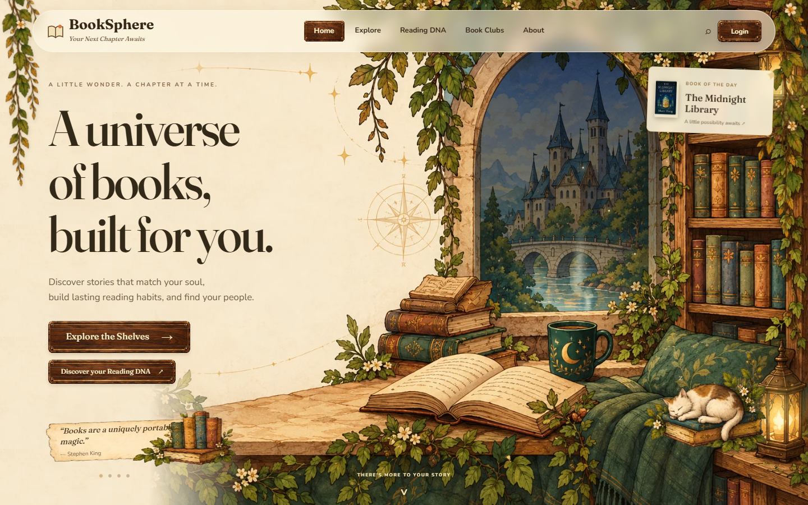
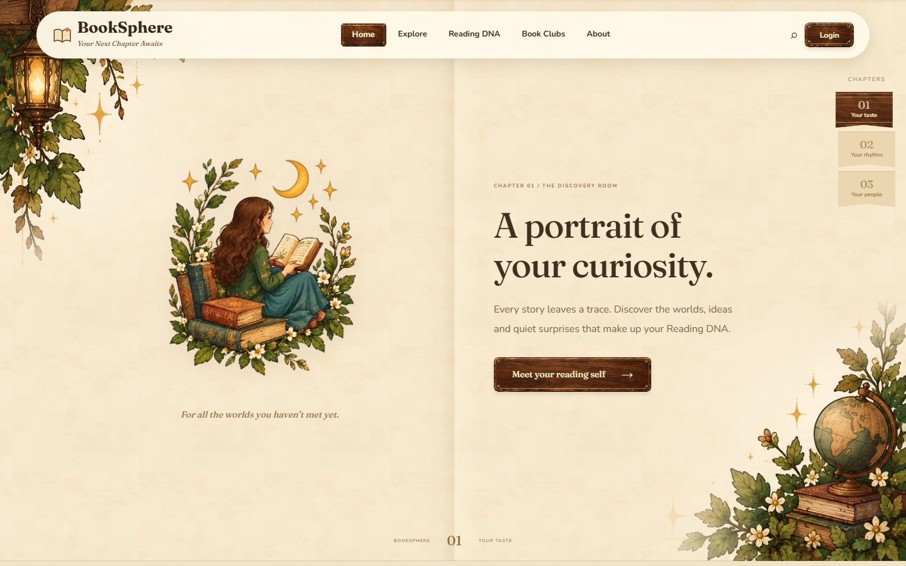
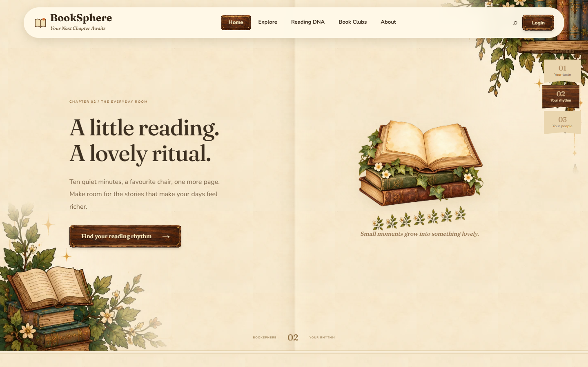
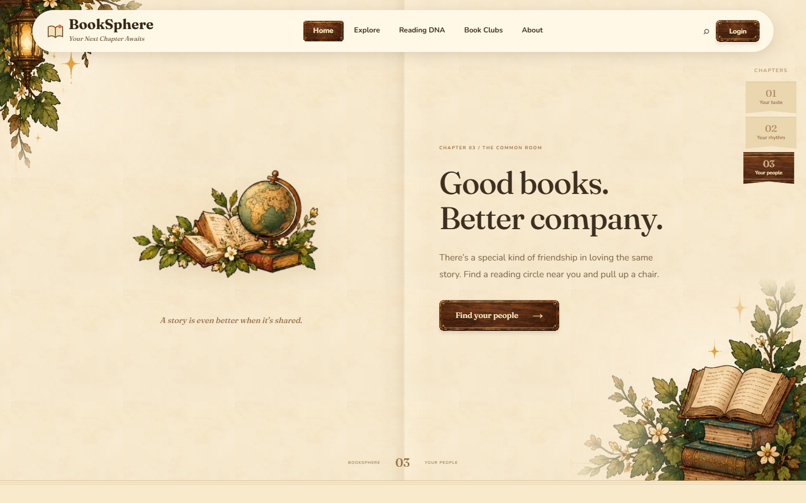
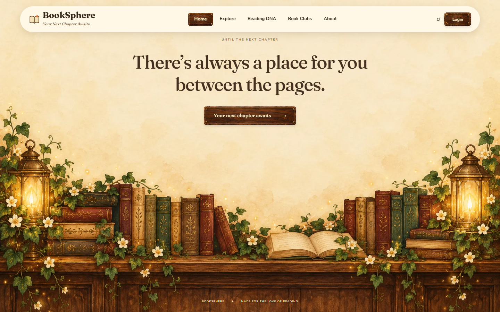
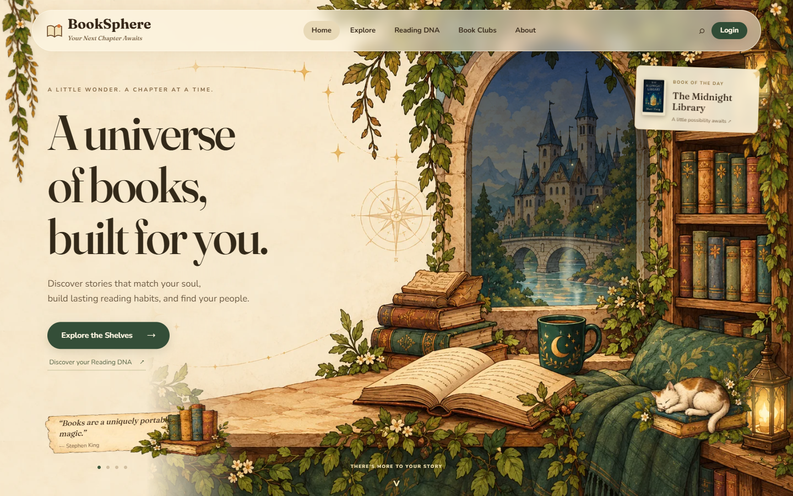

Wood, paper, and the next chapter.
The landing page now uses painted walnut controls, full-width illustrated book spreads, a chapter bookmark and a closing bookshelf scene. Scroll remains native; reduced motion keeps the pages still.
Open BookSphere · Implementation and checks · Mobile Lighthouse: 81/100 · Generated assets and prompts
Choose a size; click any screenshot for the original.
The wooden controls

Chapter I — Your taste

Chapter II — Your rhythm

Chapter III — Your people

The closing page

Before this pass
